A two-person project built from a Vocaloid producer's bedroom demos and a fan's voice — songs written like short stories, sung by someone the world has never seen.


suis
n-buna and suis have never shown their faces in a single official photo, video, or livestream, opting instead to perform behind screens and heavy backlighting during live concerts. This is a deliberate choice rooted in n-buna's belief that the creators' identities should never distract listeners from the music and its underlying narrative.